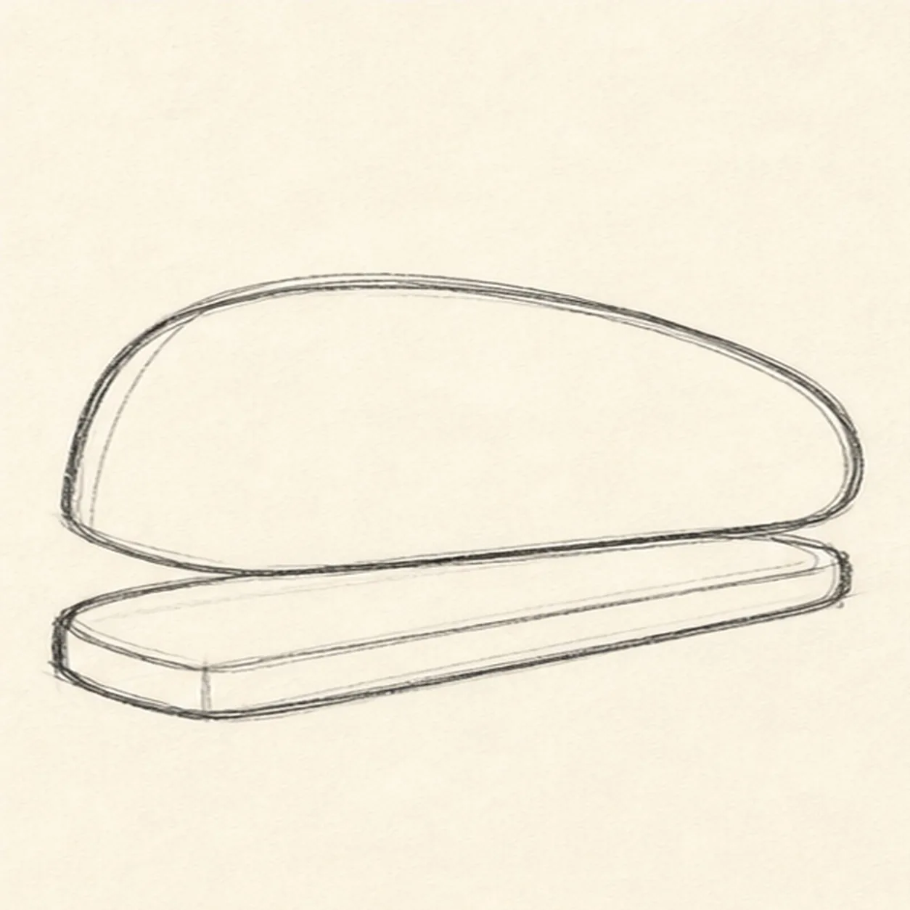
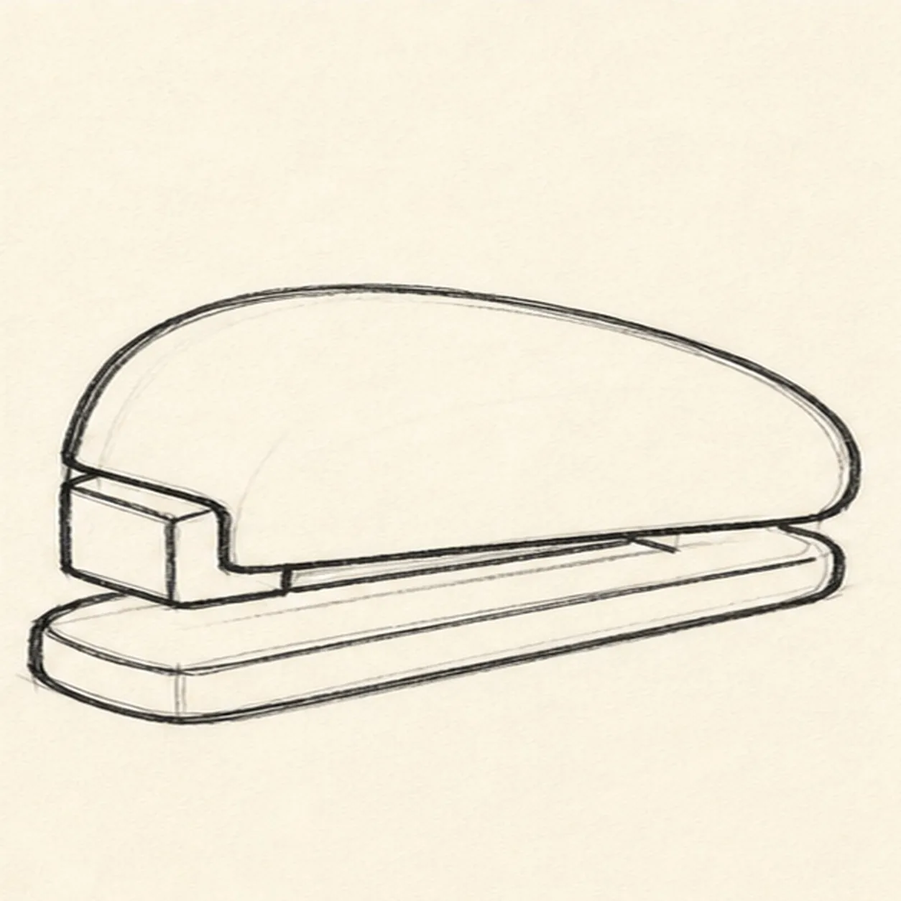
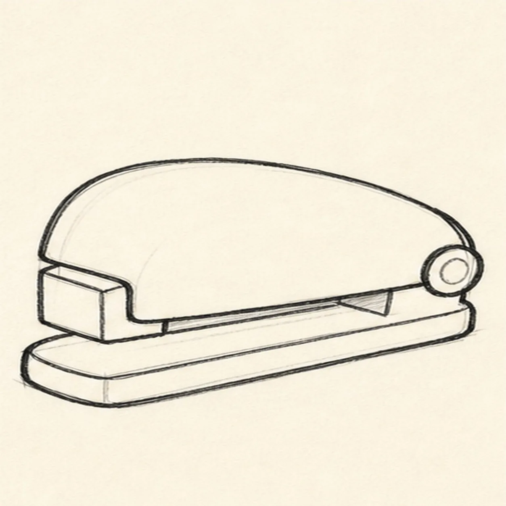
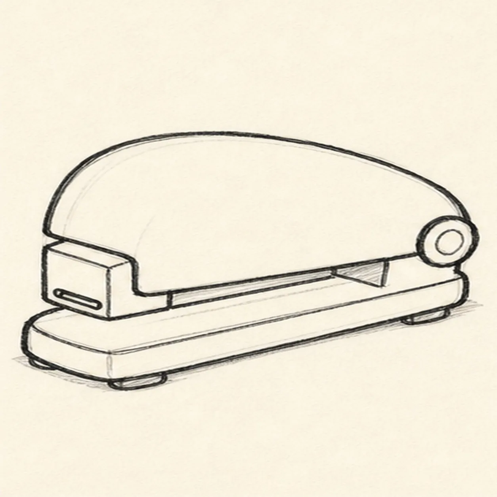
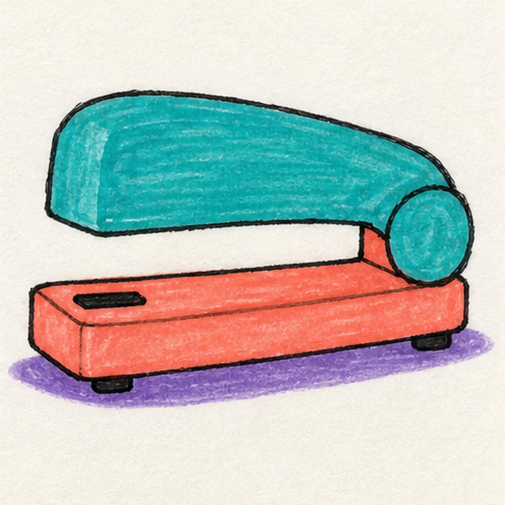

Felt-tip marker mode
Let's draw a cartoon stapler
Treat this as one playful practice round: sketch the idea loosely, simplify the shapes, then commit with confident marker outlines and bright fills.
-
01

Block the stapler
Draw a long rounded top shell, then add a flat base underneath it at the same angle.
Doodle tip: Ghost the two long shapes first. Matching their angle makes the stapler look solid before any details appear.
-
02

Square the nose
Add the squared front nose and clarify how the top shell meets the lower base.
Doodle tip: Leave a clean gap under the top shell. That negative space is what tells the viewer the stapler can press down.
-
03

Add the hinge
Place a round hinge cap at the back and clean up the rear contour.
Doodle tip: Keep the hinge chunky and simple. Tiny hardware disappears fast in a marker drawing.
-
04

Place slot and feet
Add a dark staple slot near the front and two tiny feet under the base.
Doodle tip: Draw the slot as one short, confident rectangle. Too much detail can make the front look busy.
-
05

Fill the stapler colors
Fill the top shell teal, add coral to the base and nose, and place a small purple shadow underneath.
Doodle tip: Pull marker strokes along the stapler body. Directional streaks make the rounded top feel handmade instead of flat.
-
06

Snap the stapler into shape
Thicken the black outlines, even the existing marker fills, clarify the nose, hinge, slot, feet, and same shadow.
Doodle tip: Stop before adding eyes, paper, words, or a border. The chunky top, base, hinge, slot, feet, and bright color carry the drawing.